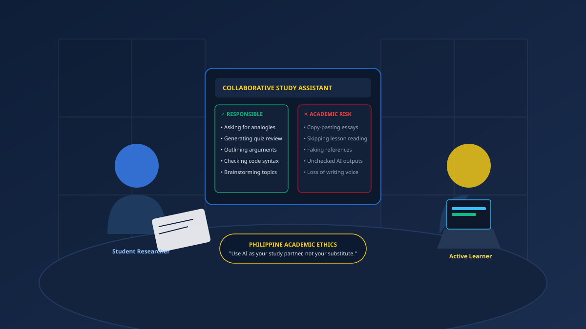

How Filipino Students Can Use AI for Schoolwork Without Cheating
A balanced guide to using generative AI as an empowering intellectual study partner — exploring the clear boundary between genuine learning support and academic dishonesty.

With AI chatbots accessible right from students’ smartphones, the temptation to copy and paste responses directly into school assignments is a daily reality. Yet for Filipino students striving for genuine competence, cheating with AI carries a hidden penalty: it robs you of the very skills that college and the workforce exist to build.
1. Redefining AI: Study Partner vs. Substitute
The simplest way to maintain academic integrity is to adopt a clear mental model: AI is your study partner, never your substitute.
When you collaborate with a real-life classmate in a library, you would never ask them: "Can you do my entire assignment and let me submit it under my name?" That would be cheating. Instead, you discuss challenging questions, brainstorm alternative approaches, and ask each other: "Does my explanation of this concept make sense?"
Treating AI with this exact same standard ensures that your cognitive effort remains central to the learning process.
2. Good Uses vs. Poor Uses of AI
To eliminate ambiguity, here is a direct comparison of productive educational AI usage versus practices that compromise academic honesty:
✓ Responsible Uses (Learning)
- Asking AI to explain a textbook concept in simpler Taglish or everyday Filipino examples
- Brainstorming broad thesis angles and research keywords
- Generating practice quizzes to test your memory before a midterm exam
- Checking grammar and punctuation on an essay you drafted entirely yourself
- Requesting step-by-step logic traces for programming errors in BSIT or computer science subjects
✕ Poor Uses (Academic Risk)
- Promping AI to write your essay, reflection paper, or case study from scratch
- Submitting AI-generated answers directly into LMS portals or Google Classrooms
- Faking bibliographic citations or accepting unverified historical claims
- Copying computer code solutions without being able to explain line-by-line functionality
- Using AI to bypass the mental struggle of reading, summarizing, and synthesizing
The Term Paper Brainstorming Session
A college student in Quezon City receives an assignment in Purposive Communication: write an argumentative essay on the economic opportunities and challenges faced by freelance Filipino digital workers.
Instead of asking AI to write the essay, the student uses AI as an intellectual sounding board: "What are three counterarguments against relying solely on overseas gig platforms for young Filipino graduates?"
The AI points out issues such as lack of local labor protections, algorithmic pay volatility, and absence of employer-matched benefits. The student evaluates these points, notes them in an outline, and conducts their own research using Philippine labor department reports and verified news articles to write the paper independently.
The takeaway: The student formulated the inquiry and wrote every paragraph themselves. The AI served only to widen the student's initial horizon of reflection.
3. Five Practical Ways to Learn Ethically with AI
A. Explaining Jargon and Dense Theories
Textbooks are frequently written in dense academic prose that can dishearten learners. When encountering an impenetrable paragraph in sociology, accounting, or biology, paste it into an AI assistant with the instruction: "Summarize the central thesis of this passage in plain language without omitting key technical terms." Once the basic concept is clear, return to your textbook and re-read the original text.
B. Creating Self-Assessment Quizzes
Passive rereading of highlighted lecture slides is among the least effective study habits. AI excels at active recall: provide your class lecture notes and ask the model: "Create five multiple-choice questions and two short-essay questions based on these notes. Do not reveal the answers until I submit my attempts."
C. Outlining and Organizing Ideas
Writer’s block is common when facing a blank document. Instead of letting an algorithm write for you, list five scattered thoughts you have about your topic, and ask AI to organize them into a chronological or thematic outline. You retain full ownership of the ideas; the tool merely assists with structure.
D. Reviewing Code Syntax (BSIT / Engineering Context)
For Filipino computer science and BSIT students, spending three hours hunting for a missing semicolon or broken loop can be demoralizing. Asking an AI: "Explain why this loop throws an index out of bounds error" provides a localized diagnostic without handing you a pre-packaged project.
E. Refining Grammar While Preserving Voice
If you struggle with English syntax, ask the tool: "Review this paragraph for grammatical errors and awkward phrasing. Explain each suggested correction." By reading the explanations, your grammatical proficiency improves for future exams where AI will not be present.
4. Respecting Philippine School and University Policies
Philippine educational institutions are actively establishing guidelines on AI usage. Some faculties encourage AI experimentation within controlled research frameworks; others require written declarations of every digital assistant consulted; and some prohibit generative tools entirely for foundational writing courses.
"When in doubt, always ask your professor or instructor. Transparency is the hallmark of academic integrity. Never assume silence implies unconditional permission."
Key Takeaways
- Effort builds mastery: The mental friction of writing and solving problems is what creates genuine neural understanding.
- Transparency over secrecy: If you use AI for brainstorming or grammar feedback, document it openly as part of your study methodology.
- Guard your authentic voice: AI text is generic and predictable; your lived Philippine student perspective is irreplaceable.
- Ask before using: Always verify your school’s and instructor’s specific rules regarding generative technology.
You May Also Like

AI in Philippine Education: Learning Smarter
How Filipino students can navigate AI tools, digital literacy, and academic responsibility.

AI and Student Productivity: Managing Schoolwork
Balancing commute times, heavy course loads, and group capstone tasks using smart digital organization.

Can Filipino Students Trust AI Answers?
Why AI hallucinations happen and how to systematically verify claims using authoritative Philippine sources.